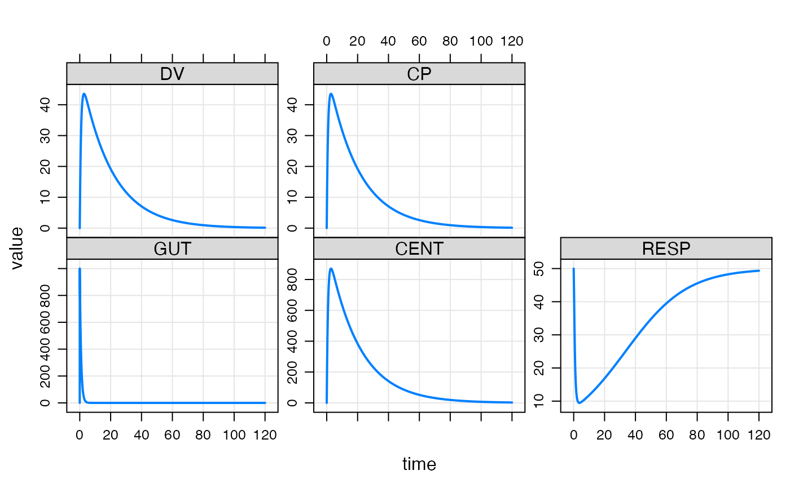

This function sets up the simulation run from data stored in the model
object as well as arguments passed in. Use mrgsim_q() instead
to benchmark mrgsolve or to do repeated quick simulation for tasks like
parameter optimization, sensitivity analyses, or optimal design. See
mrgsim_variants for other mrgsim-like functions that have more focused
inputs. mrgsim_df coerces output to data.frame prior to returning.
Usage
mrgsim(x, data = NULL, idata = NULL, events = NULL, nid = NULL, ...)
mrgsim_df(..., output = "df")
do_mrgsim(
x,
data,
idata = no_idata_set(),
carry_out = carry.out,
carry.out = character(0),
recover = character(0),
seed = as.integer(NA),
Request = character(0),
output = NULL,
capture = NULL,
obsonly = FALSE,
obsaug = FALSE,
tgrid = NULL,
etasrc = "omega",
recsort = 1,
deslist = list(),
descol = character(0),
filbak = TRUE,
tad = FALSE,
nocb = TRUE,
skip_init_calc = FALSE,
ss_n = 500,
ss_fixed = FALSE,
interrupt = 256,
...
)Arguments
- x
the model object.
- data
NMTRAN-like data set (see
data_set()).- idata
a matrix or data frame of model parameters, one parameter per row (see
idata_set()).- events
an event object.
- nid
integer number of individuals to simulate; only used if idata and data are missing.
- ...
passed to
update()anddo_mrgsim().- output
if
NULL(the default) a mrgsims object is returned; otherwise, passdfto return a data.frame ormatrixto return a matrix.- carry_out
numeric data items to copy into the output.
- carry.out
soon to be deprecated; use
carry_outinstead.- recover
character column names in either
dataoridatato join back (recover) to simulated data; may be any class (e.g. numeric, character, factor, etc).- seed
deprecated.
- Request
compartments or captured variables to retain in the simulated output; this is different than the
requestslot in the model object, which refers only to model compartments.- capture
character file name used for debugging (not related to
$CAPTURE).- obsonly
if
TRUE, dosing records are not included in the output.- obsaug
augment the data set with time grid observations; when
TRUEand a full data set is used, the simulated output is augmented with an observation at each time instime(). When usingobsaug, a flag indicating augmented observations can be requested by includinga.u.gincarry_out.- tgrid
a tgrid object; or a numeric vector of simulation times or another object with an
stimemethod.- etasrc
source for
ETA()values in the model; values can include:"omega","data","data.all","idata", or"idata.all"; see 'Details'.- recsort
record sorting flag. Default value is 1. Possible values are 1,2,3,4: 1 and 2 put doses in a data set after padded observations at the same time; 3 and 4 put those doses before padded observations at the same time. 2 and 4 will put doses scheduled through
addlafter observations at the same time; 1 and 3 put doses scheduled throughaddlbefore observations at the same time.recsortwill not change the order of your input data set if both doses and observations are given.- deslist
a list of tgrid objects.
- descol
the name of a column for assigning designs.
- filbak
carry data items backward when the first data set row has time greater than zero.
- tad
when
TRUEa column is added to simulated output is added showing the time since the last dose. Only data records withevid == 1will be considered doses for the purposes oftadcalculation. Thetadcan be properly calculated with a dosing lag time in the model as long as the dosing lag time (specified in$MAIN) is always appropriate for any subsequent doses scheduled throughaddl. This will always be true if the lag time doesn't change over time. But it might (possibly) not hold if the lag time changes prior to the last dose in theaddlsequence. This known limitation shouldn't affecttadcalculation in most common dosing lag time implementations.- nocb
if
TRUE, use next observation carry backward method; otherwise, uselocf.- skip_init_calc
don't use
$MAINto calculate initial conditions.- ss_n
maximum number of iterations for determining steady state for the PK system; a warning will be issued if steady state is not achieved within
ss_niterations whenss_fixedisTRUE.- ss_fixed
if
FALSE(the default), then a warning will be issued if the system does not reach steady state withinss_niterations given the model tolerancesrtolandatol; ifTRUE, the number of iterations for determining steady state are capped atss_nand no warning will be issued if steady state has not been reached withinss_ndosing iterations. To silence warnings related to steady state, setss_fixedtoTRUEand setss_nas the maximum number of iterations to try when advancing the system for steady state determination.- interrupt
integer check user interrupt interval; when
interruptis a positive integer, the simulation will check for the user interrupt signal everyinterruptsimulation records; pass a negative number to never check for the user interrupt interval.
Value
An object of class mrgsims.
Details
Use
mrgsim_df()to return a data frame rather thanmrgsimsobject.Both
dataandidatawill be coerced to numeric matrixcarry_outcan be used to insert data columns into the output data set. This is partially dependent on the nature of the data brought into the problem.When using
dataandidatatogether, an error is generated if an ID occurs indatabut notidata. Also, when looking up data inidata, ID inidatais assumed to be uniquely keyed to ID indata. No error is generated if ID is duplicated indata; parameters will be used from the first occurrence found inidata.carry_out:idatais assumed to be individual-level and variables that are carried fromidataare repeated throughout the individual's simulated data. Variables carried fromdataare carried via last-observation carry forward.NAis returned from observations that are inserted into simulated output that occur prior to the first record indata.recover: this is similar tocarry_outwith respect to end result, but it uses a different process. Columns to be recovered are cached prior to running the simulation, and then joined back on to the simulated data. So, whereascarry_outwill only accept numeric data items,recovercan handle data frame columns of any type. There is a small decrease in performance withrecovercompared tocarry_out, but it is likely that the performance difference is difficult to perceive (when the simulation runs very fast) or only a small fractional increase in run time when the simulation is very large. And any performance hit is likely to be well worth it in light of the convenience gain. Just think carefully about using this feature when every millisecond counts.etasrc: this argument lets you control whereETA(n)come from in the model. Whenetasrcis set to"omega"(the default),ETAswill be simulated from a multivariate normal distribution defined by the$OMEGAblocks in the model. Alternatively, inputdataoridatasets can be used to pass in fixedETA(n)by settingetasrcto"data","idata","data.all"or"idata.all". Whenetasrcis set to"data"or"data.all", the input data set will be scanned for columns calledETA1,ETA2, ...,ETAnand those values will be copied into the appropriate slot in theETA()vector. Only the first record for each individual will be copied intoETA(); all records after the first will be ignored. When there are more than9ETAsin a model, NONMEM will start naming the outputsET10,ET11etc rather thanETA10andETA11. When mrgsolve is looking for these columns, it will first search, for example,ET10and use that value if it is found. IfET10isn't found and there are more than9ETAs, then it will also search forETA10. An error will be generated in case mrgsolve finds both theETAandETname variant for the tenth and higherETA(e.g. it is an error to have bothETA10andET10in the data set). When mrgsolve is searching forETAcolumns in the data set, it will only look forETAnup to the number of rows (or columns) in all the model$OMEGAblocks. For example, if$OMEGAis 5x5, onlyETA1throughETA5will be searched. An error will be generated in case mrgsolve finds no columns withETAnnames and something other thanetasrc = "omega"was passed. Whenetasrc = "data"and anETAncolumn is missing from the data set, the missingETA()will be set to0. Alternatively, the user can passetasrc = "data.all"which causes an error to be generated if anyETAnis missing from the data set. Use this option when you intend to have allETAsattached to the data set and want an error generated if mrgsolve finds one or more of them is missing. Usingetasrc ="idata"or"idata.all", the behavior is identical to"data"(or"data.all"), except mrgsolve will look at the idata set rather than data set.
Examples
## example("mrgsim")
e <- ev(amt = 1000)
mod <- mrgsolve::house()
out <- mod %>% ev(e) %>% mrgsim()
plot(out)

out <- mod %>% ev(e) %>% mrgsim(end=22)
out
#> Model: housemodel
#> Dim: 90 x 7
#> Time: 0 to 22
#> ID: 1
#> ID time GUT CENT RESP DV CP
#> 1: 1 0.00 0.0 0.0 50.00 0.00 0.00
#> 2: 1 0.00 1000.0 0.0 50.00 0.00 0.00
#> 3: 1 0.25 740.8 257.5 42.29 12.87 12.87
#> 4: 1 0.50 548.8 445.0 32.69 22.25 22.25
#> 5: 1 0.75 406.6 580.8 25.29 29.04 29.04
#> 6: 1 1.00 301.2 678.3 20.05 33.91 33.91
#> 7: 1 1.25 223.1 747.4 16.45 37.37 37.37
#> 8: 1 1.50 165.3 795.6 14.01 39.78 39.78
data(exTheoph)
out <- mod %>% data_set(exTheoph) %>% mrgsim()
out
#> Model: housemodel
#> Dim: 132 x 7
#> Time: 0 to 24.65
#> ID: 12
#> ID time GUT CENT RESP DV CP
#> 1: 1 0.00 4.020000 0.000 50.00 0.00000 0.00000
#> 2: 1 0.25 2.978089 1.035 49.95 0.04552 0.04552
#> 3: 1 0.57 2.028470 1.961 49.81 0.08624 0.08624
#> 4: 1 1.12 1.048417 2.875 49.57 0.12643 0.12643
#> 5: 1 2.02 0.356038 3.428 49.33 0.15072 0.15072
#> 6: 1 3.82 0.041060 3.439 49.25 0.15121 0.15121
#> 7: 1 5.10 0.008838 3.263 49.28 0.14348 0.14348
#> 8: 1 7.03 0.000872 2.980 49.34 0.13101 0.13101
out <- mod %>% mrgsim(data=exTheoph)
out <- mrgsim(mod, data=exTheoph, obsonly=TRUE)
out
#> Model: housemodel
#> Dim: 120 x 7
#> Time: 0.25 to 24.65
#> ID: 12
#> ID time GUT CENT RESP DV CP
#> 1: 1 0.25 2.978e+00 1.035 49.95 0.04552 0.04552
#> 2: 1 0.57 2.028e+00 1.961 49.81 0.08624 0.08624
#> 3: 1 1.12 1.048e+00 2.875 49.57 0.12643 0.12643
#> 4: 1 2.02 3.560e-01 3.428 49.33 0.15072 0.15072
#> 5: 1 3.82 4.106e-02 3.439 49.25 0.15121 0.15121
#> 6: 1 5.10 8.838e-03 3.263 49.28 0.14348 0.14348
#> 7: 1 7.03 8.720e-04 2.980 49.34 0.13101 0.13101
#> 8: 1 9.05 7.723e-05 2.703 49.40 0.11884 0.11884
out <- mod %>% mrgsim(data=exTheoph, obsaug=TRUE, carry_out="a.u.g")
out
#> Model: housemodel
#> Dim: 5904 x 8
#> Time: 0 to 120
#> ID: 12
#> ID time a.u.g GUT CENT RESP DV CP
#> 1: 1 0.00 1 0.000 0.000 50.00 0.00000 0.00000
#> 2: 1 0.00 0 4.020 0.000 50.00 0.00000 0.00000
#> 3: 1 0.25 1 2.978 1.035 49.95 0.04552 0.04552
#> 4: 1 0.25 0 2.978 1.035 49.95 0.04552 0.04552
#> 5: 1 0.50 1 2.206 1.790 49.84 0.07870 0.07870
#> 6: 1 0.57 0 2.028 1.961 49.81 0.08624 0.08624
#> 7: 1 0.75 1 1.634 2.337 49.73 0.10274 0.10274
#> 8: 1 1.00 1 1.211 2.729 49.61 0.12001 0.12001
out <- mod %>% ev(e) %>% mrgsim(outvars="CP,RESP")
out
#> Model: housemodel
#> Dim: 482 x 4
#> Time: 0 to 120
#> ID: 1
#> ID time RESP CP
#> 1: 1 0.00 50.00 0.00
#> 2: 1 0.00 50.00 0.00
#> 3: 1 0.25 42.29 12.87
#> 4: 1 0.50 32.69 22.25
#> 5: 1 0.75 25.29 29.04
#> 6: 1 1.00 20.05 33.91
#> 7: 1 1.25 16.45 37.37
#> 8: 1 1.50 14.01 39.78
a <- ev(amt = 1000, group = 'a')
b <- ev(amt = 750, group = 'b')
data <- as_data_set(a,b)
out <- mrgsim_d(mod, data, recover="group")
out
#> Model: housemodel
#> Dim: 964 x 8
#> Time: 0 to 120
#> ID: 2
#> ID time GUT CENT RESP DV CP group
#> 1: 1 0.00 0.0 0.0 50.00 0.00 0.00 a
#> 2: 1 0.00 1000.0 0.0 50.00 0.00 0.00 a
#> 3: 1 0.25 740.8 257.5 42.29 12.87 12.87 a
#> 4: 1 0.50 548.8 445.0 32.69 22.25 22.25 a
#> 5: 1 0.75 406.6 580.8 25.29 29.04 29.04 a
#> 6: 1 1.00 301.2 678.3 20.05 33.91 33.91 a
#> 7: 1 1.25 223.1 747.4 16.45 37.37 37.37 a
#> 8: 1 1.50 165.3 795.6 14.01 39.78 39.78 a